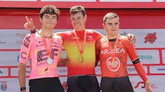
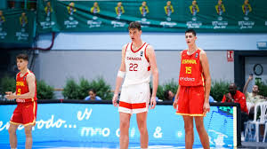
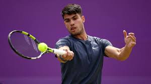
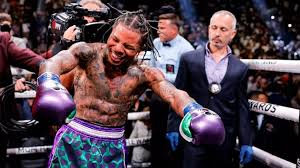

PORTAL DE NOTICIAS DEPORTIVAS
.jfif)
"El exito no es un accidente es trabajo duro, perseverancia, aprendizaje, estudio, sacrificio y sobretodo, amor por lo que estas haciendo o aprendiendo hacer" PELE
Aca podras encontrar noticias relacionadas al deporte a nivel nacional:
Futbol
Ciclismo
Baloncesto
Tenis
Boxeo
Futbol

Conmebol Copa América— es el principal torneo internacional oficial de fútbol masculino en América del Sur. Inicialmente denominada Campeonato Sudamericano de Selecciones, Campeonato Sudamericano de Fútbol o simplemente Campeonato Sudamericano, adquirió su nombre actual en 1975.
La copa america 2024 estados unidos dio inio el 21-06-2024 con el partido inagural de la seleccion campeona Argentina vs la seleccion de canada

Ciclismo
Del paro a campeón de España
El catalán, que no ganaba desde hace seis años, y tras un invierno difícil, campeón de España contra el crono. Beloki y García Pierna, en el podio.

Baloncesto
El exmadridista Rioux puede 'romper' la NBA: 2,36 y sigue creciendo.El fenómeno canadiense, un pívot de 18 años que jugará en Florida, sigue creciendo: si llega a la NBA será el más alto de la historia de la Liga.

Tenis
Draper corta la racha imperial de Alcaraz en hierba. El británico elimina en octavos al español, que acumulaba 13 triunfos seguidos en esa superficie y perderá el número dos del ranking.

Boxeo
¿Qué viene para Gervonta Davis tras derrotar a Frank Martin? Los posibles rivales para ‘Tank’ toman lugar.Gervonta Davis demostró que es uno de los mejores boxeadores en la actualidad luego de imponerse de forma contundente a Frank Martin el sábado pasado
